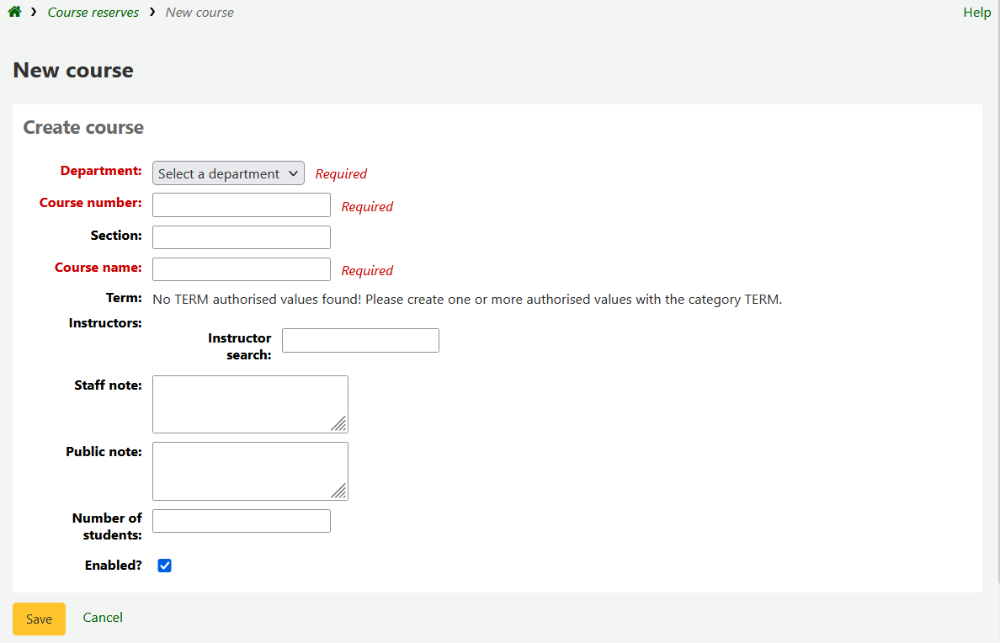
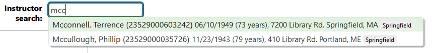
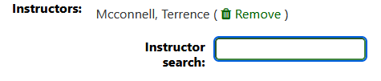
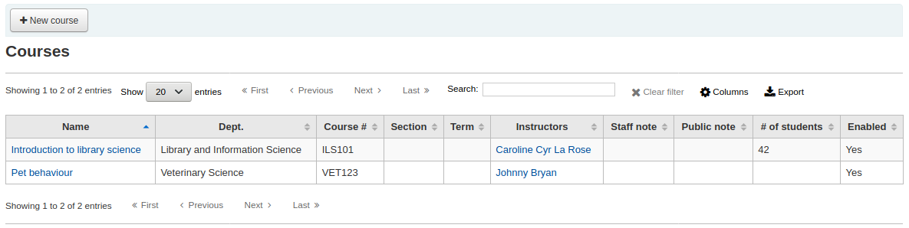
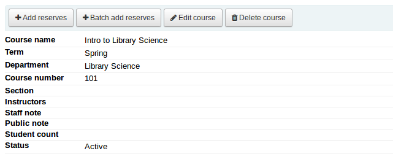
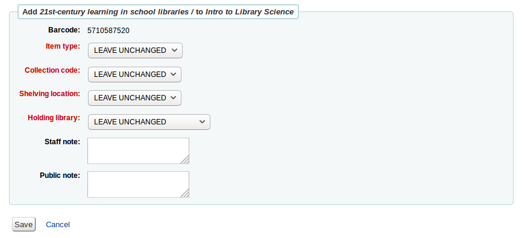
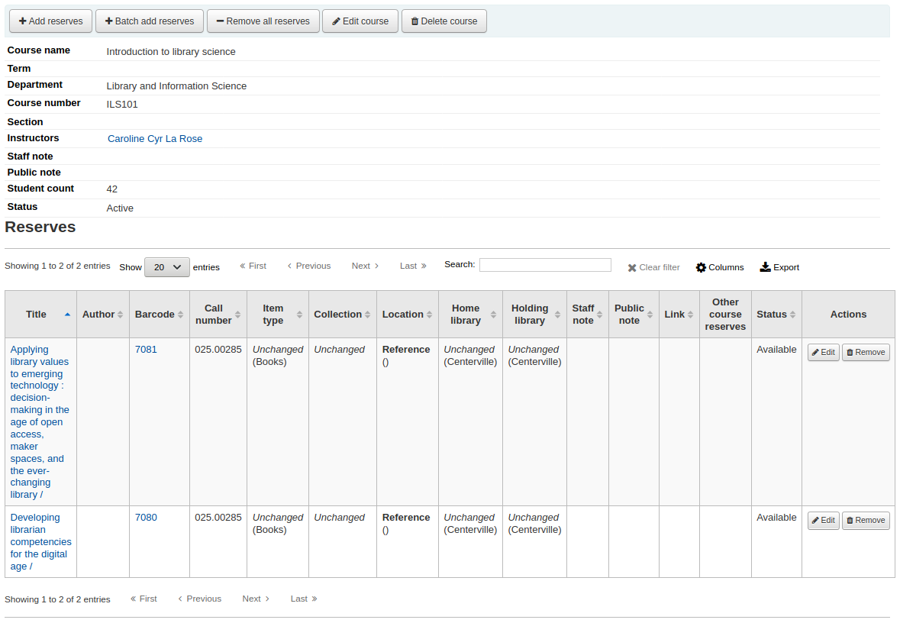
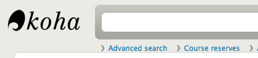
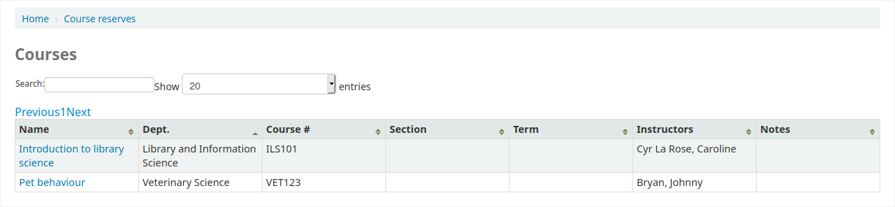
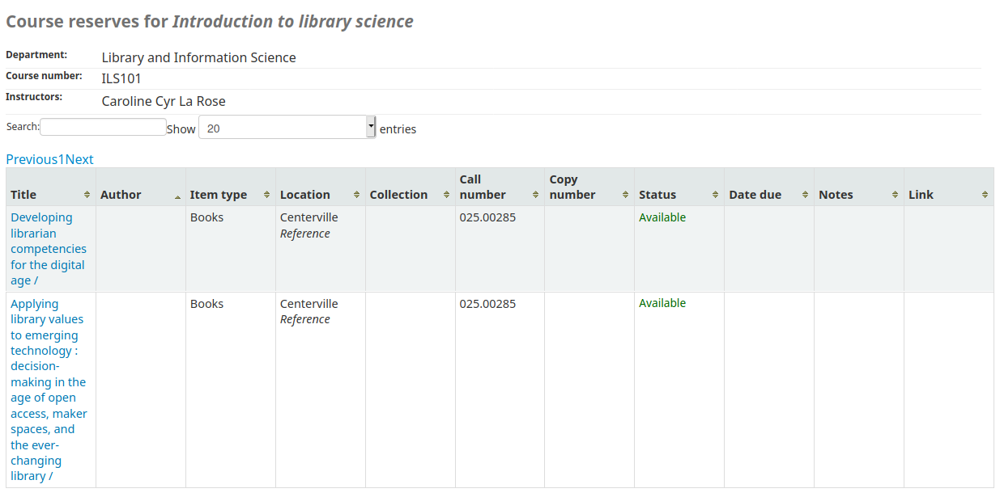

課程指定參考書
Koha 的指定參考書模組可以把館藏暫時移入 ‘保留’ 區，並適用特別的流通規則，供指定的課程使用。
課程指定參考書設定
使用指定參考書前，您必須要做一些設定。
First you will need to enable course reserves by setting the UseCourseReserves preference to ‘Use’.
接著將使用指定參考書的老師新增為讀者 新增讀者。
接著新增系所與學期的 容許值。
或許需要新增 館藏類型、館藏代碼 與 書架位置 等資料，讓讀者容易提取該等指定館藏。也需要確認:ref:`流通與罰款規則 <circulation-and-fine-rules-label>`的正確性 (借出時數或天數)。
新增課程
設定指定參考書課程後，您可新增課程並新增標題到指定參考書清單。

從指定參考書的課程頁面, 您可以點選左下角的 ‘新課程’ 按鈕，新增課程。

您的新課程至少需要系所、代號及名稱。您還可以新增額外的資訊如課程區塊編號及要求等。要將教師連結到本課程，輸入教師名稱後 Koha 會搜尋讀者資料庫找到適當的人並與課程連結。

教師名稱出現後，點選他們的名稱就能新增了。您可重複此步驟。每個教師都會出現在搜盒之上且點選其名稱右方的 ‘移除’ 連結，就能夠移除他。

如果你想公開課程，您在儲存新課程前請選擇 ‘啟用?’ 選項。
指定參考書課程儲存後，將顯示在課程頁面並可從任何欄位搜尋它。

註記
您可以在管理模組的:ref:’欄組態’<column-settings-label> 部份, 自定義此表的列(table id: courses page, course_reserves_table)。
新增指定參考書教材
新增指定參者書前，您至少要有一個課程才能加入它。請至指定參考書模組。
勾選加入資料的課程名稱。

在課程說明上方，請點擊 ‘新增保留’ 鍵新增題名至此指定參考書清單中。您將會被要求提供條碼號給每個題名。

可以改變每個館藏的類型、館藏代碼、館藏位置或所屬圖書館。這些改變祗適用於開課中的課程。課程停開後，回覆原來的館藏狀態。

掃瞄條碼並加入課程後，就能在課程頁面看到它們

註記
您可以在管理模組的 :ref:`’欄組態’<column-settings-label>`部份，自定義此表的列(table id: reserves page, course_reserves_table)。
可以同時加入多個館藏。勾選 ‘批次新增指定參考書’。

掃描館藏的條碼，就能夠新增指定參考書，或改變類型、館藏代碼、館藏位置或所屬圖書館。
顯示於 OPAC 的指定參考書課程
啟用指定參考書並新增課程後，您可以在 OPAC 搜尋框之中看到指定參考書課程連結。

勾選上連結將顯示啟用課程的清單(若祗有一個課程則可看到其內容)。

註記
您可以在管理模組的 ‘欄組態’ 部份, 自定義此表的列(table id: course_reserves_table)。
可以用指定參考書出現的欄位 (課程編號、課程名稱、教師姓名、開課系所) 搜尋。按課程名稱將顯示其館藏。

註記
您可以在管理模組的 :ref:`’欄組態’<column-settings-label>`部份, 自定義此表的列(table id: course-items-table)。